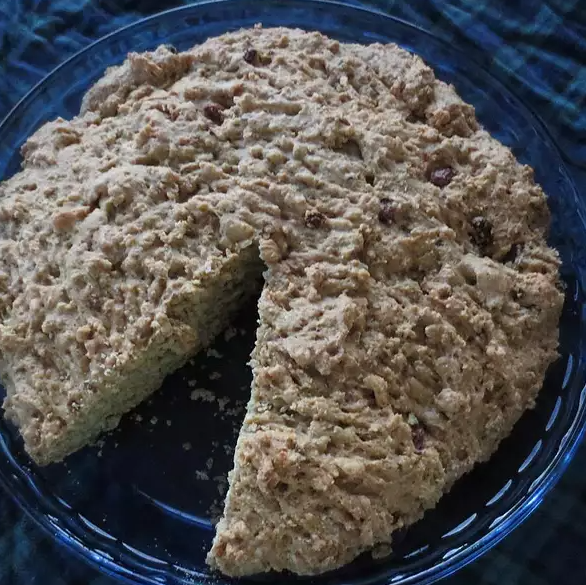

This recipe has been handed down in my family for over 150 years. We haven't changed a thing!
Ingredients:
- 3 cups all-purpose flour
- 1 1/4 cups milk, or more as needed
- 1 cup raisins
- 3/4 cup white sugar
- 2 tablespoons caraway seeds (Optional)
- 1 tablespoon vegetable oil
- 2 teaspoons baking powder
- 1 teaspoon baking soda
- 1/4 teaspoon salt
Instructions:
- Preheat oven to 350 degrees F (175 degrees C). Grease an 8-inch round glass baking dish.
- Mix flour, milk, raisins, sugar, caraway seeds, vegetable oil, baking powder, baking soda, and salt together in a bowl until dough is not wet enough to pour and not dry enough to handle. Add more milk if dough is too dry. Transfer dough to the baking dish.
- Bake in the preheated oven until a toothpick inserted in the center comes out clean, about 50 minutes.
Return to main page